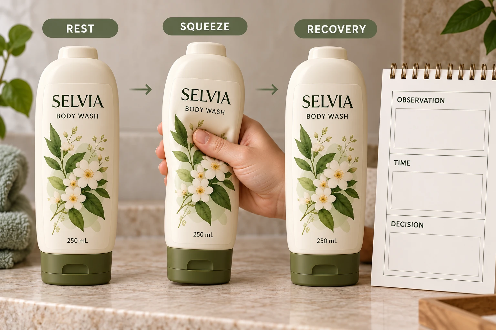

Start with how this container is actually used
Identify the bottle or tube reference, resin or construction where known, fill condition and label panel. Ask the packaging team where the consumer is expected to press and which areas change shape. Keep the closure and normal pack orientation in the discussion.
Do not transfer a result from one container merely because another has the same volume. Wall design, panel geometry and the way the pack is used can change the relevant question. A gently flexible lotion bottle and a tube repeatedly folded near the tail do not present identical scenarios.
The facial-cleanser tube guide covers panel selection and the broader packaging layout. Here the decision is what evidence supports the label through the specific deformation the team intends to accept.
Ask for a conformability proposal, not a generic film name
Avery Dennison's conformable-film overview distinguishes semi-conformable and fully conformable film families. That supports a construction-specific discussion; it does not establish that any named film works on every squeezable pack.
Ask the label supplier to identify the proposed face stock, adhesive, liner and protective finish, with the relevant material reference. Ask what container and use conditions the recommendation actually addresses. Keep any limitation with the proposal instead of reducing it to the word waterproof.
Printed layers and finish belong to the evaluation too. A blank material sample may help explore fit, but it cannot establish the appearance of the complete printed and finished label under handling. The waterproof-material guide explains why a material name is only part of the construction.
Define a handling sequence the reviewers can interpret
Agree who prepares the sample, when the label is applied and what conditioning the supplier requires before review. Then describe the handling event in terms the responsible team can reproduce. Avoid an arbitrary internet cycle count presented as a standard.
The sequence might need to distinguish the resting pack, the intended squeeze and the recovery stage. Record where the movement occurs, what the observer should inspect and when the observation is made. If repeated use matters, have the technical parties define the relevant repetition and acceptance method.
Keep different findings separate. A temporary shape change during a squeeze, a persistent crease after recovery, an edge concern and a change in printed appearance are different observations. Describe what is actually present and ask the supplier to investigate the relevant event rather than calling all of them poor adhesion.
Turn the observations into a release decision
Use this project worksheet with the supplier's instructions and brand acceptance reference.
| Field | Record | How to use it |
|---|---|---|
| Pack identity | Actual container, closure and fill condition | Establish which use geometry was evaluated |
| Label construction | Face, adhesive, finish and sample reference | Keep the proposal reproducible |
| Preparation | Agreed application and conditioning | Avoid comparing differently prepared samples |
| Handling event | Defined deformation and responsible operator | Connect the observation to intended use |
| Observation stage | Resting, during movement or after recovery | Distinguish transient and retained appearance |
| Feature | Crease, edge, print or another defined condition | Route the right question for review |
| Disposition | Accepted scope, open item and owner | Prevent an unqualified sample-approved email |
First confirm identity and preparation. Carry out the agreed handling review under the responsible party's method. Compare observations with the documented appearance objective and identify what needs correction, another sample or technical explanation. Keep a retained reference if the project team requires one.
Do not release the unresolved use claim if the evaluated pack was empty while the intended use involves a filled container, or if the supplied sample lacks the final finish that is under review. Record what the evidence does cover and obtain the missing evaluation.

Different designs can justify different corrections
A hypothetical label reaching into a strongly deforming area may benefit from a revised shape or placement, if the approved copy and presentation still work. Changing the construction alone is not the only available option.
A second project may have a necessary broad label panel and a supported conformable construction. It has a reason to evaluate that complete route rather than shrinking the design until it loses its intended function. The supplier and brand should explain which compromise they are accepting.
For cosmetic bottle labels, provide the actual pack reference, panel dimensions, artwork, quantity per design and the expected handling event. Include existing sample IDs and what remains unresolved. Use the inquiry form to prepare the message, then send photos and records by email or WhatsApp. Ask for evidence of the used-pack decision you need to make.